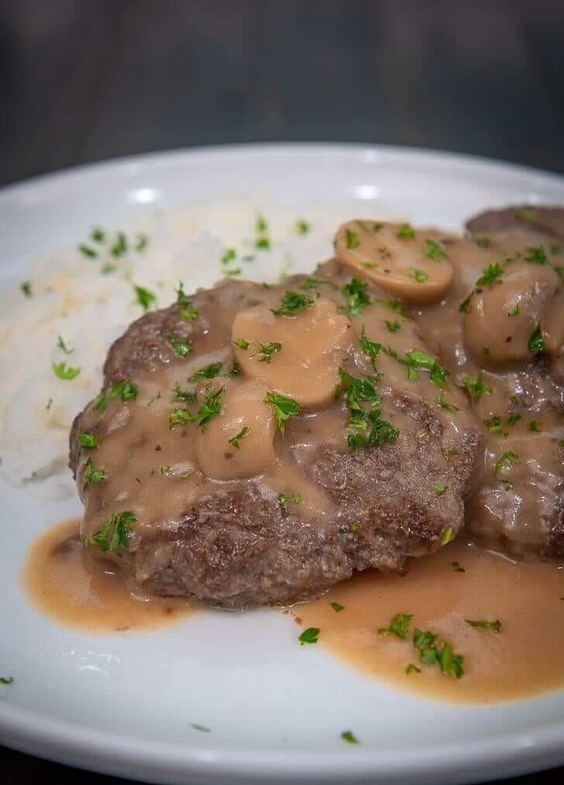

Burger Steak Recipe
What is Burger Steak?
Biting into a rich, thick burger patty is arguably one of the most satisfying classic dining experiences. Perhaps it is what leads us running again and again to our favorite burger joints. But if you decide to make them, yourself, you'll have the agency to choose your seasonings, and very importantly, sauces to match your palate. And if flavorful, copious amounts of warm gravy is your preference, you might want to try my Beef Burger Steak recipe.
Ingredients
1 lb. ground beef
1 teaspoon onion powder
1 piece Knorr Beef Cube
1/2 cup breadcrumbs
1/2 teaspoon garlic powder
1 piece egg
1/4 teaspoon ground black pepper
1/4 cup cooking oil
2 tablespoons parsley
5 ounces button mushroom
3 tablespoons butter
4 tablespoons all-purpose flour
1 piece Knorr Beef Cube
1/4 teaspoon Knorr liquid seasoning
1/2 teaspoon onion powder
1/4 teaspoon garlic powder
1 3/4 cup water
Instructions / How to Cook
1. Make the beef patties by combining ground beef, onion powder, garlic powder, ground black pepper, and egg. Grate 1 piece of Knorr beef cube. Mix everything together.
2. Make the patties by scooping around ¼ cup of the meat mixture. Mold it into ball shaped figures and then flatten.
3. Heat 2 tablespoons cooking oil in a pan. Fry one side of the patties in medium heat until it browns. Turn it over and do the same procedure to the opposite side. Remove from the pan. Set it aside.
4. Make the gravy by melting butter in a saucepan.
5. Add all-purpose flour. Cook in medium heat while stirring for 8 minutes to make a brown roux.
6. Add Knorr Beef Cube. Stir until melted.
7. Pour water into the saucepan. Stir until well blended. Note: you will notice that the mixture slowly gets thicker in time.
8. Add onion powder, garlic powder, ground black pepper, and Knorr Liquid Seasoning. Cook for 30 seconds.
9. Add sliced mushrooms. Cook for 1 minute. Set aside.
10. Arrange beef patties over a cup of steamed rice and then pour beef gravy all over.
11. Top with chopped parsley, Serve warm. Share and enjoy!